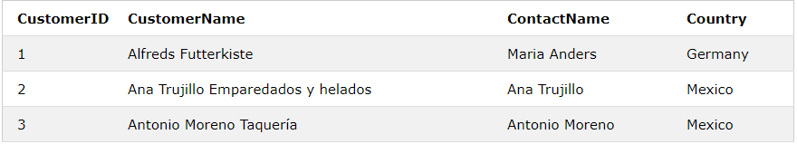
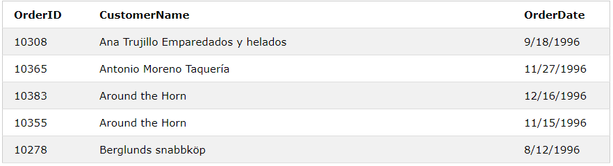

A JOIN clause is used to combine rows from two or more tables, based on a related column between them.
Let's look at a selection from the "Orders" table:

Then, look at a selection from the "Customers" table:
Notice that the "CustomerID" column in the "Orders" table refers to the "CustomerID" in the "Customers" table. The relationship between the two tables above is the "CustomerID" column. Then, we can create the following SQL statement (that contains an INNER JOIN), that selects records that have matching values in both tables:
SELECT Orders.OrderID, Customers.CustomerName, Orders.OrderDate FROM Orders INNER JOIN Customers ON Orders.CustomerID=Customers.CustomerID;
and it will produce something like this:
Here are the different types of the JOINs in SQL: